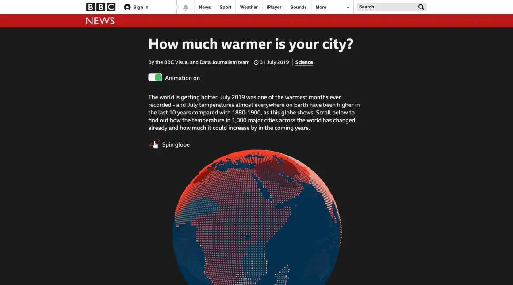
BBC News
How much warmer is your city?
An interactive BBC News story that made climate change feel local by showing how temperatures had shifted in cities around the world.
Read the case studySELECTED WORK & OTHER CURIOSITIES
A mix of data stories, product work, experiments and things I’ve learned along the way.
CASE STUDIES

BBC News
An interactive BBC News story that made climate change feel local by showing how temperatures had shifted in cities around the world.
Read the case study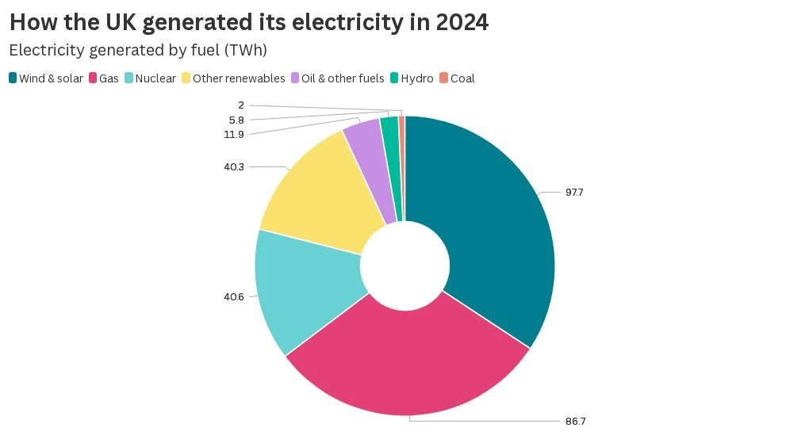
Flourish
I led the design and engineering of external labels for Flourish pie and donut charts, working with product designers on how labels behave when space is tight.
Read the case study
Global Energy Monitor
I used the Flourish API to connect multiple visualisations so readers could explore energy infrastructure using shared filters.
Read the case study
Flourish
I co-built a publishing and export interface that handles approvals, export restrictions and embed settings.
Read the case studyI led remediation across Flourish’s visualisation template library, taking findings from an external audit through triage and into changes people could use.
Reach details in hierarchy charts using a keyboard, with visible focus to show where you are.
Read chart values in a table and hear relevant updates as an animated chart changes.
Use a tap where a drag gesture was previously the only way to complete an action.
OTHER PUBLISHED WORK
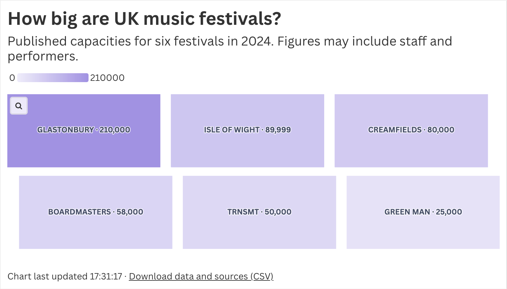
FLOURISH · PRODUCT ENGINEERINGA chart comparing six UK music festivals shows when the data was last updated and lets readers download the figures and their sources as a CSV.
Open the interactive chart ↗ BBC NEWS · SCROLLYTELLING
BBC NEWS · SCROLLYTELLING
CSS animation, D3 and REGL bring the transformation of a locust swarm to life, with an animation toggle and a graceful no-JavaScript fallback.
Read the story ↗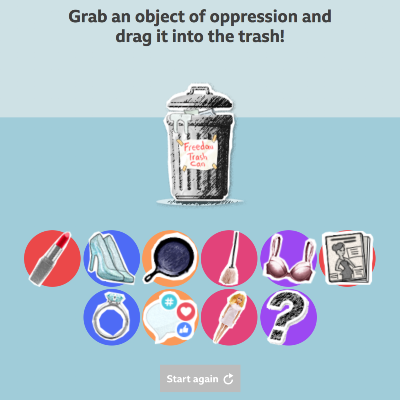
BBC NEWS · INTERACTIVELead developer on a drag-and-drop story about what women would like to throw away, with keyboard and screen-reader alternatives. Published in 25 languages.
Read the story ↗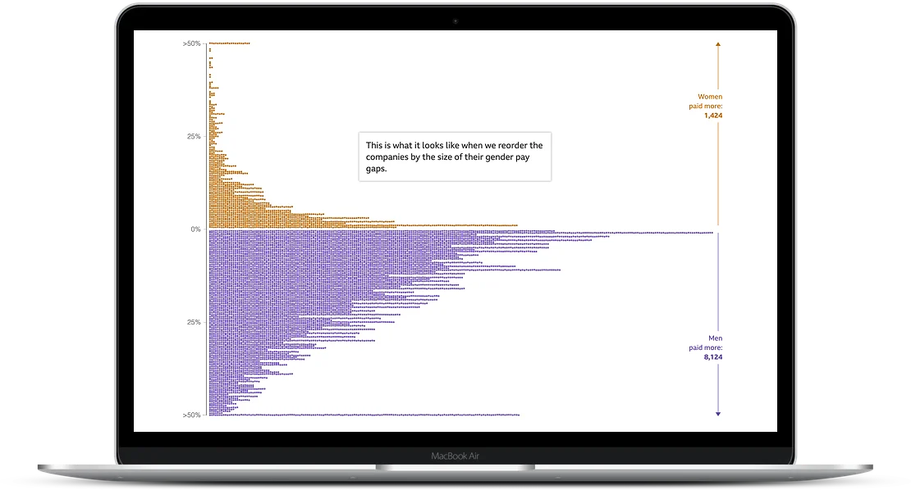
BBC NEWS · DATA STORYTELLINGOne of the team’s first scrollytelling projects: over 10,000 data points, WebGL rendering and an animation toggle designed in from the start.
Read the story ↗ BBC NEWS · SCROLLYTELLING
BBC NEWS · SCROLLYTELLING
Co-developed a story imagining how our homes and offices might change after the pandemic; it reached over two million page views in its first three days.
Read the story ↗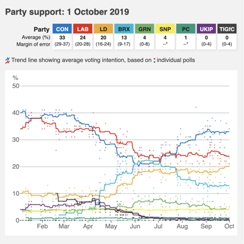
BBC NEWS · ELECTIONSBuilt a data pipeline and update process for a polling chart, pictogram and table, with automated deployment and generated fallback images.
Read the tracker ↗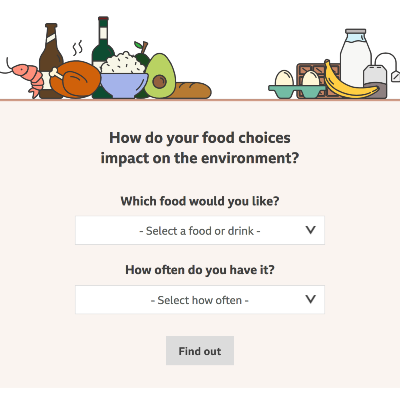
BBC NEWS · CLIMATEHelped people explore the climate impact of food choices, with accessible styling and keyboard-friendly ways to change selections.
Use the calculator ↗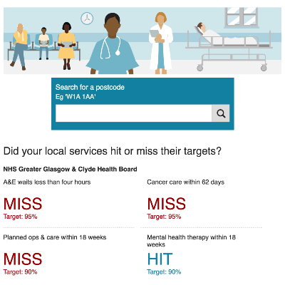
BBC NEWS · HEALTH DATALed development on an update to the local health services tracker, including new mental health figures and mentoring two junior developers.
Read the tracker ↗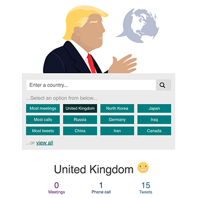
BBC NEWS · INTERACTIVELead developer on an interactive exploring the president’s comments about countries, built for progressive enhancement and accessibility.
Read the story ↗HOBBY PROJECTS
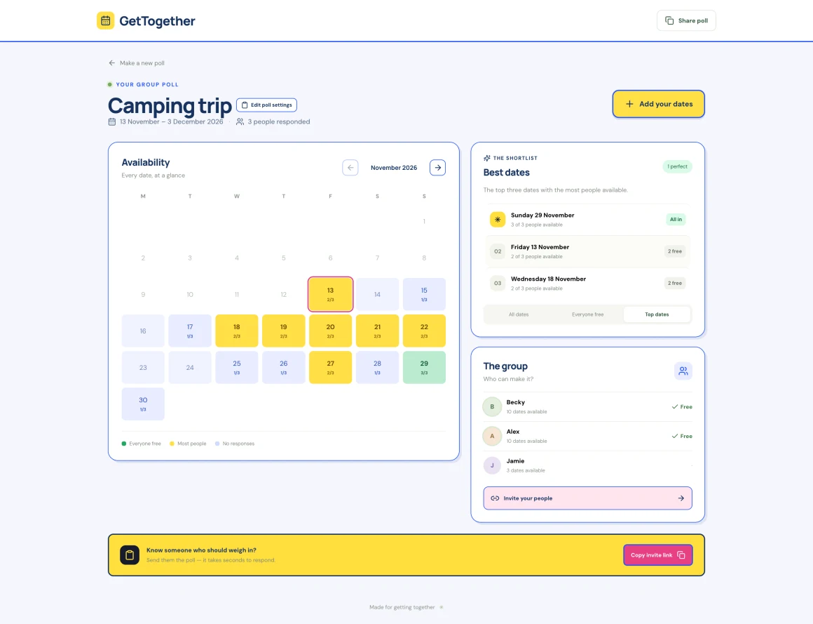
A calendar app to find the dates when the whole gang is free.
Visit the prototype ↗A Green Man festival app for making a schedule, sharing with friends and discovering new music.
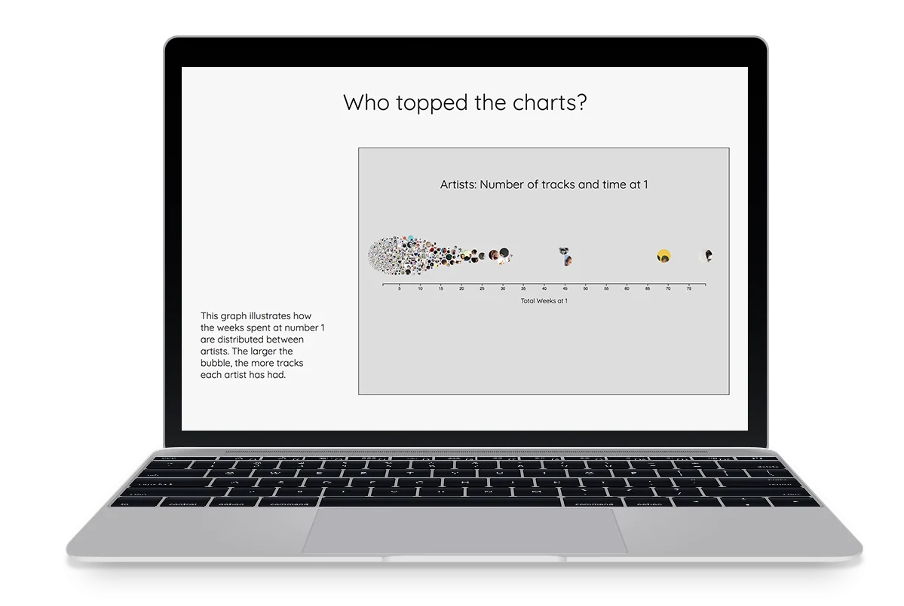
Scraped chart history, Spotify audio data, analysis in R and interactive visualisations in D3. A favourite project that needs a refresh.
An immersive online and VR experience made for the NASA Space Apps Challenge. I created its soundtrack from NASA audio and original music.
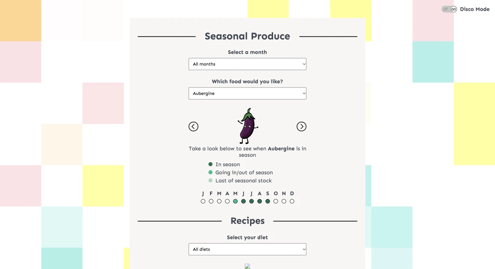
An unfinished prototype I built with a friend to help people find out when fruit and vegetables are in season.
Visit the prototype ↗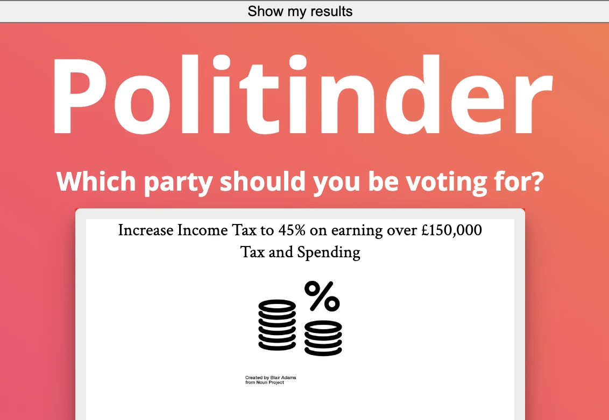
A playful politics concept made with a friend, from data scraping through to implementation. The live version needs tracking down.
WRITING & SPEAKING
Want the timeline and details in one place?
Read my resume